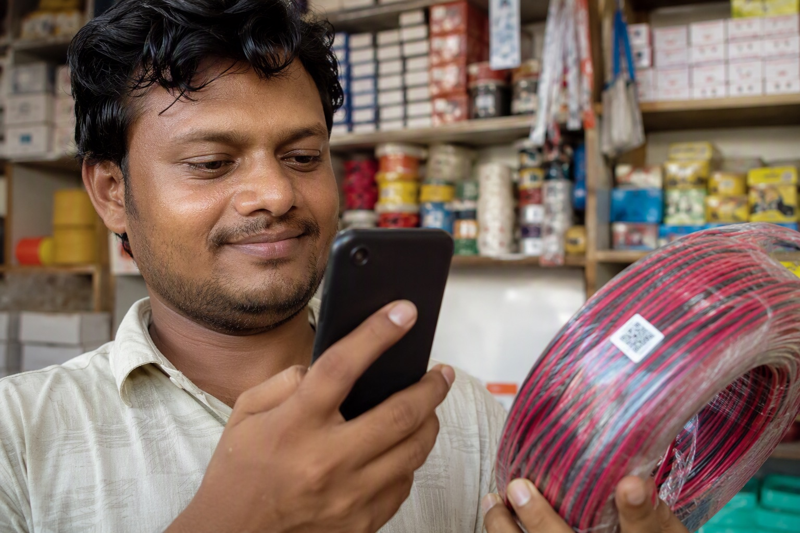

How to Scan the Outer QR Code on a Finolex Box (Step by Step)

To check the outer QR code on a Finolex box: find the printed QR on the carton label, open your phone camera, scan it, and confirm the page that opens belongs to Finolex and reports the product as genuine with details matching the carton in your hand. This takes about twenty seconds per box and is the first of two checks — the second is the inner QR code inside the box.
Where the outer QR code is printed
On a genuine Finolex coil, the QR sits on the carton's printed label, alongside the information that identifies that specific box:
- The size in sq mm — 1.0, 1.5, 2.5, 4.0 or 6.0.
- The grade — FR, FR-LSH, or the premium range name.
- The coil length — 90m, 180m or 300m.
- The batch or lot number.
- The voltage rating and applicable IS standard.
All of this should be printed as part of the carton, in the same ink and register as the rest of the artwork. A QR code on a pasted sticker, sitting on top of the printing, is the single most common warning sign in this entire category. Sealed cartons are also why we recommend buying 90-metre boxes rather than loose wire — loose wire has no carton, so there is nothing to scan at all.
Scanning it
- Use your phone's built-in camera. No special app is required. If someone insists you must install a particular app to verify, be suspicious — that is a route counterfeiters use to control what you see.
- Hold steady in good light. Carton printing is matte, so avoid direct glare. If the code will not resolve, see what a non-scanning code means.
- Look at the link before you tap it. This is the step almost everyone skips. The URL should belong to Finolex's own domain — their verification portal sits at check.finolex.com. A look-alike domain, a URL shortener, or a random page is a fake code regardless of what it then tells you.
- Read the result against the box. The product, size and batch reported should match what is printed in front of you. A verification that says "genuine" while describing a different size is not a pass.
The two-layer check
The outer code proves the carton is real. It does not, by itself, prove the wire inside is. A carton can be genuine and refilled — which is precisely why Finolex puts a second code inside the box.
| Layer | Where it is | What it proves |
|---|---|---|
| Outer QR code | Printed on the outside of the carton, with the batch, size and grade | That this carton was produced by Finolex and is registered in their system |
| Inner QR code | Inside the box, reachable only after the carton is opened | That the contents are the ones Finolex packed — the check a repacker cannot pass |
A serious verification means doing both. Most buyers stop at the outer code, and repackers rely on exactly that.
Four red flags on the outer code
- No QR code at all on the carton.
- A pasted sticker carrying the code rather than printing integrated with the label.
- The code opens a non-Finolex domain — a look-alike spelling, a shortener, or a generic landing page with no product detail.
- The result does not match the box — different size, different grade, or a report that the code has been scanned many times already. On that last one, read what an already-scanned code means.
Scan before you pay, not after
All of this is only useful if you can do it before money changes hands. Mount Cable delivers on pay on delivery terms for exactly this reason: the material reaches your site, you scan every carton, and you pay afterwards. Anything that does not verify goes back on the vehicle.
A shop that is reluctant to let you scan a carton before paying has answered your question about the stock.
Buying Finolex in Bangalore? Mount Cable India is one of the largest distributors of Finolex cables in the country. WhatsApp your list to 88676 76700 for an exact quote within 60 minutes — free next-day delivery, pay on delivery, and you scan and verify every box at your site before any money changes hands.
Frequently asked questions
How do I scan the QR code on a Finolex wire box?
Where is the QR code on a Finolex box?
Do I need an app to verify Finolex wire?
Is scanning the outer QR code enough to prove the wire is genuine?
What if the Finolex QR code opens a website that is not Finolex?
Can I scan the box before paying?
Ready to order for your home?
Upload your wiring list for an instant quote — 100% original material, free next-day delivery across Bangalore.